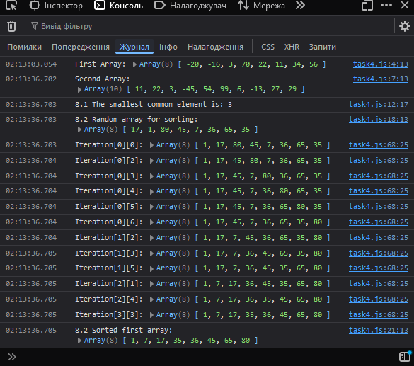

Завдання №4
HTML-код (task4.html)
<!DOCTYPE html> <html lang="en"> <head> <meta charset="UTF-8"> <meta name="viewport" content="width=device-width, initial-scale=1.0"> <title>= Task 4 =</title> <link rel="stylesheet" href="style1.css"> </head> <body> <header></header> <main> <div class="button-container"> <h1>= Завдання №4 =</h1> <input type="button" class="button" onclick="window.location.href='./index.html'" value="На початкову сторінку"> <input type="button" class="button" onclick="userInput()" value="Викликати js-код"> </div> </main> <footer></footer> <script src="./task4.js"></script> </body> </html>
JS-код (task4.js)
// Функція для отримання даних від користувача function userInput() { let firstArray = getValidArray("Please enter the elements of the first array separated by spaces:"); console.log("First Array:", firstArray); let secondArray = getValidArray("Please enter the elements of the second array separated by spaces:"); console.log("Second Array:", secondArray); // Знаходимо найменший спільний елемент між двома масивами let smallestCommonElement = smallestElemTwoArray(firstArray, secondArray); if (smallestCommonElement !== null) { console.log(`8.1 The smallest common element is: ${smallestCommonElement}`); } else { console.log("8.1 There are no common elements between the two arrays."); } // Генеруємо випадковий масив для сортування, виходячи з довжини першого масиву let arrayBeforeSort = createRandomArray(firstArray.length, 1, 100); console.log("8.2 Random array for sorting:", arrayBeforeSort); // Сортуємо згенерований масив методом бульбашкового сортування і виводимо результат let arrayAfterSort = bubbleSort(arrayBeforeSort); console.log("8.2 Sorted first array:", arrayAfterSort); } // Функція для отримання і перевірки масиву чисел від користувача function getValidArray(promptMessage) { let array; while (true) { let input = prompt(promptMessage); array = input.split(" ").map(Number); if (array.every(num => !isNaN(num))) { return array; } console.log("Please enter a valid array (only numbers)."); } } // Функція для знаходження найменшого спільного елемента між двома масивами function smallestElemTwoArray(array1, array2) { const commonElements = array1.filter(value => array2.includes(value)); if (commonElements.length === 0) { return null; // Немає спільних елементів } return Math.min(...commonElements); // Повертаємо найменший спільний елемент } // Функція для створення випадкового масиву заданої довжини і діапазону значень function createRandomArray(length, min, max) { const array = []; for (let i = 0; i < length; i++) { // Генерація випадкового числа в діапазоні від min до max const randomNumber = Math.floor(Math.random() * (max - min + 1)) + min; array.push(randomNumber); } return array; } // Функція для сортування масиву методом бульбашки function bubbleSort(arr) { const len = arr.length; for (let i = 0; i < len; i++) { for (let j = 0; j < len - 1; j++) { if (arr[j] > arr[j + 1]) { // Якщо поточний елемент більший за наступний, міняємо їх місцями const temp = arr[j]; arr[j] = arr[j + 1]; arr[j + 1] = temp; console.log(`Iteration[${i}][${j}]:`, arr); } } } return arr; }
Результат виконання
Коментар до JS-коду
ЦЦей код містить функції для взаємодії з користувачем та обробки масивів. Функція userInput запитує користувача ввести два масиви чисел, а також визначає найменший спільний елемент між ними. Якщо спільні елементи знайдено, вони виводяться на екран, в іншому випадку повідомляється про їх відсутність. Далі створюється випадковий масив, довжина якого відповідає першому масиву, після чого він сортується методом бульбашки, і результати сортування також виводяться в консоль. Функції getValidArray, smallestElemTwoArray, createRandomArray та bubbleSort виконують відповідно перевірку введення, знаходження спільних елементів, генерацію випадкових чисел і сортування масиву, що забезпечує цілісність і коректність даних.